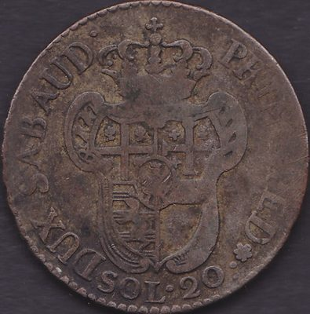
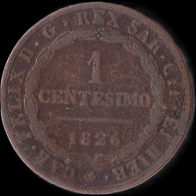
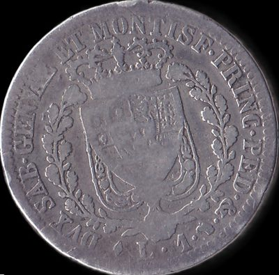

Home
Italia
Stati Preunitari
Regno di Sardegna
Regno di Sardegna
Clicca sulle monete per vedere il retro
Vittorio Amedeo III
20 Soldi

1796
Carlo Felice
1 Centesimo

1826
1 Lira

1825
Home
Italia
Stati Preunitari
Regno di Sardegna